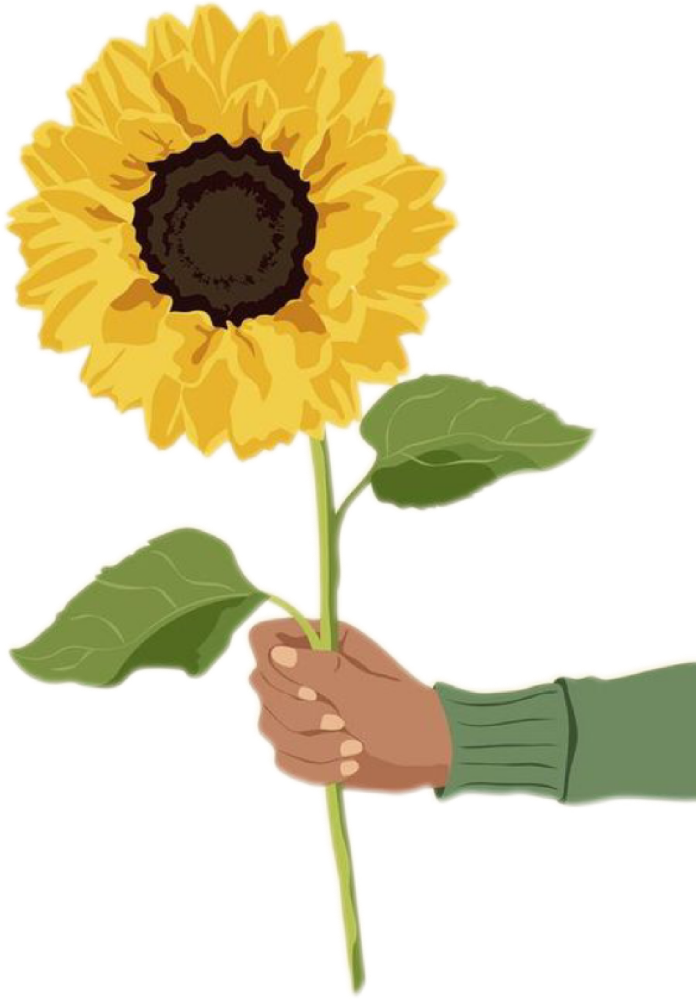
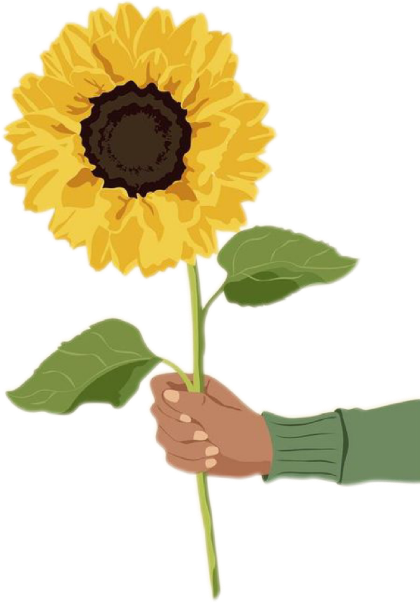

Autumn is the best time to display annual plants, In fact, autumn is also one of the highest blooming season for some of the most well-liked flowers is in September and October.
It's a special time of year because the days are becoming shorter and the temperature is starting to drop from scorching summer nights. Autumn is said to as the season with an abundance of fruits, nuts, and seeds. Flowers that bear fruit are also present where there is fruit. The tenderness of these flowers that accompany Autumn, with their stunning variety of colours, shapes, and sizes, creates a melancholy feeling unmatched by any other.
Sunflowers make a statement in any setting and, while they are synonymous with sunshine and those hazy summer days, they bloom late enough in the season to be considered autumn flowers.These cheery blooms unfurl their gorgeous yellow petals between July and September and their bright faces and vibrant colours make them the perfect choice for a vase in your living space or wrapped and ready to give to someone who needs cheering up.
 
Main page
Aster

Main page
Aster